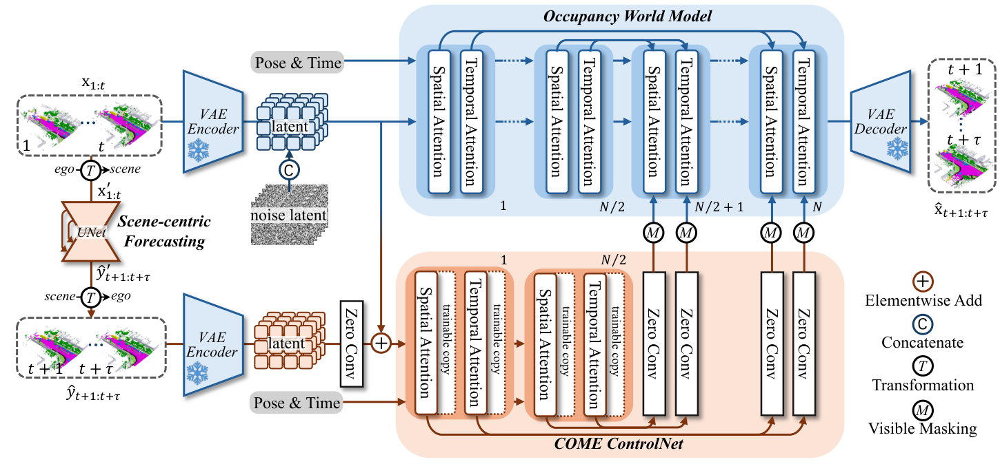

COME Adding Scene-Centric Forecasting Control to
简单摘要
世界模型对于自动驾驶模拟环境动态并生成合成数据至关重要。论文的基本思路是把 相反，我们建议通过利用以场景为中心的坐标系将环境变化与自我运动分开 放进同一条解决链路里处理。
进一步看，将以场景为中心的预测控制集成到占用世界模型中的框架。最后得到的主要结论是：nuScenes-Occ3D 数据集上的实验结果表明，与跨不同配置（包括不同输入源（地面实况、基于相机、基于融合的场景）的最先进 (SOTA) 方法）相比，该方法实现了一致且显着的改进。


世界模型的这种预测能力不仅可以评估决策结果，还可以促进合成数据的生成，而合成数据是自主系统中训练、测试和模拟的重要资源。论文的基本思路是把 相反，自我车辆的运动以及由此产生的观察视角的变化对世界模型表示的动态变化做出了重大贡献 放进同一条解决链路里处理。
进一步看，然而，最先进的 (SOTA) 世界模型依赖神经网络来隐式学习这些因素的相互交织的影响，通常会导致空间一致性不佳。最后得到的主要结论是：相比之下，当在以场景为中心的坐标系（其中静态背景与自我运动分离）中制定预测时，普通 U-Net 实现了 39.12 mIoU，提高了 44%。
核心创新
这篇工作的第一个关键点，在于它没有停留在模块堆叠层面，而是重新整理了问题的切入方式：相反，我们建议通过利用以场景为中心的坐标系将环境变化与自我运动分开。
第二个重要变化是：具体来说，首先通过 生成与自我无关的、空间一致的未来特征，然后使用定制的 将其转换为场景条件。这让方法不仅给出结果，也把为什么这样设计说得更清楚。
从整体效果看，为了为以后的特征调节预留接口，我们在每个早期层和晚期层对之间引入了跳跃连接，类似于 UNet 和 HunyuanDiT 中的架构设计。这也是它和单纯工程拼装方案拉开差距的地方。
技术细节
从方法链路看，系统首先处理的是：我们将未来轨迹（无论是真实轨迹还是规划模块预测的轨迹）视为生成模型的可用输入，原因有两个。接下来真正起关键作用的是：（2）它能够实现轨迹条件生成，这对于世界模型产生多样化且可控的输出至关重要。这样安排直接带来的收益是：为了为以后的特征调节预留接口，我们在每个早期层和晚期层对之间引入了跳跃连接，类似于 UNet 和 HunyuanDiT 中的架构设计。在训练和推理阶段，论文还额外考虑了：我们在 sec:method 中描述的基础世界模型将未来轨迹视为一个条件，但对场景演化的内在本质的理解有限，导致生成的占用中场景演化的空间不一致——这是一个限制。这组公式用于定义模型中的变量关系和训练目标。建议先看左侧要预测的对象，再看右侧每一项如何约束优化方向。
$$ \small \mathbf{M}_i(h, w) = \mathbb{I} \left(\frac{1}{D\cdot \delta_h \cdot \delta_w}\sum_{d=1}^{D}\sum_{u=h\cdot \delta_h}^{(h+1)\cdot \delta_h} \sum_{v=w\cdot \delta_w}^{(w+1)\cdot \delta_w} \mathbf{m_i}(d, u, v) < \varepsilon \right), $$

实验结论
实验部分重点验证了：我们在 sec:exp 中详细阐述了我们的实验设置，在 sec:exp 中详细阐述了所提出框架的定量和定性结果，在 sec:exp 中详细阐述了我们的实验设置，在 sec:exp 中详细阐述了广泛的消融研究。
对比结果表明，我们采用几何交并（IoU）和语义平均交并（mIoU）作为评估指标。进一步结合定性现象和消融分析，可以看出：在之前的工作中，OccVAR 之前取得了最好的性能，平均 mIoU 为 11.79，平均 IoU 为 24.35。
理解评价
从整篇论文看，它的真正贡献是：nuScenes-Occ3D 数据集上的实验结果表明，与跨不同配置（包括不同输入源（地面实况、基于相机、基于融合的场景）的最先进 (SOTA) 方法）相比，该方法实现了一致且显着的改进，而不是单纯把扩散模型继续微调。作者把问题落在“分布外驾驶场景如何稳定生成”这个更关键的缺口上。
它最有说服力的地方在于：我们在 sec:method 中描述的基础世界模型将未来轨迹视为一个条件，但对场景演化的内在本质的理解有限，导致生成的占用中场景演化的空间不一致——这是一个限制。这说明论文的方法链路——3D 点云编辑、车辆补全、再到 RL 后训练——是前后闭合的，而不是各模块各自堆叠。
主要局限在于：我们在 sec:method 中描述的基础世界模型将未来轨迹视为一个条件，但对场景演化的内在本质的理解有限，导致生成的占用中场景演化的空间不一致——这是一个限制。如果继续往前推进，一个自然方向是把更长时序、更低成本训练和更广泛的 OOD 场景覆盖一起纳入统一评估。
以下相关论文可作为延伸阅读：。